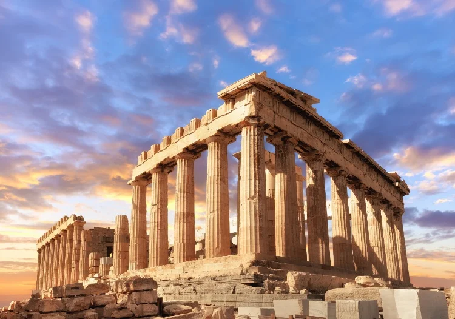
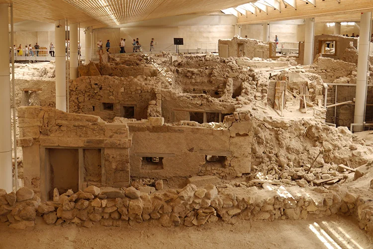
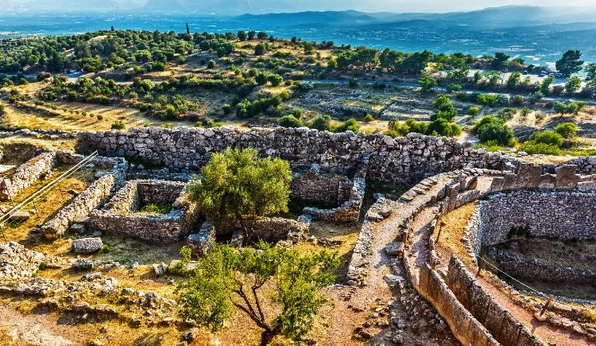
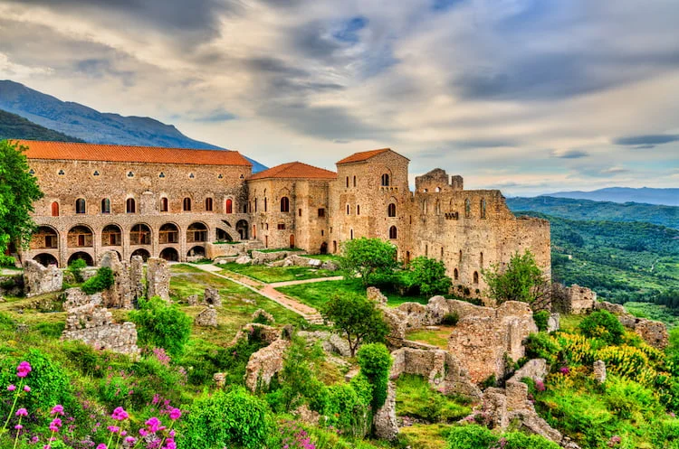
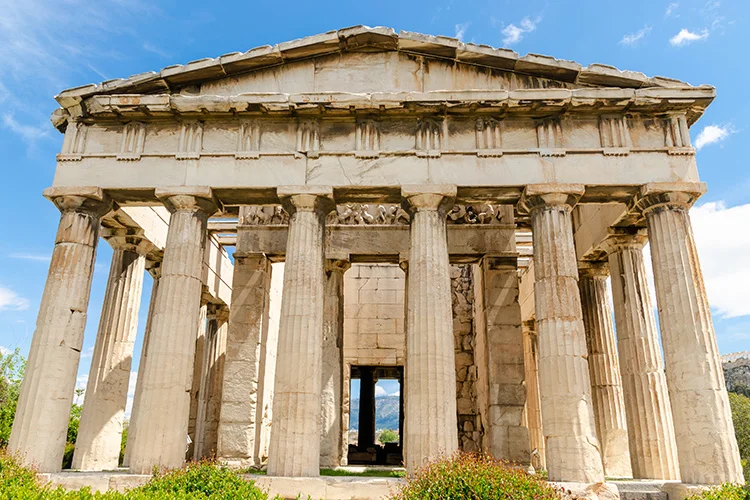

1. The Acropolis

The Acropolis is one of the most recognisable historic sites in the world and remains an inspirational monument to the achievements of Ancient Greek civilisation. Standing tall above the Greek city of Athens, the Acropolis contains a number of buildings and monuments from Greek Antiquity, including the Parthenon, the Erechtheion, the Propylaia and the temple of Athena Nike. Today, the Acropolis is an extremely popular historic site and caters for a multitude of tourists every year. The recently opened Acropolis Museum, which lies nearby, contains an amazing array of displays and artefacts from the Acropolis itself.
2. Akrotiri

Akrotiri is a beautifully preserved ancient site in Santorini, famed for its incredible frescos and its connection with the Minoans. However, Akrotiri has another claim to fame. It is generally considered that Akrotiri was linked with Knossos and would have been a Minoan site. However, some have gone further, claiming that it was the lost city of Atlantis. The stunning ruins of Akrotiri now stand testament to the sophisticated urban settlement which once existed there. The buildings are largely multi-storey, with many of them containing vivid frescoes on various themes. This excellent state of preservation has drawn parallels with another famously volcanically preserved site, earning it the moniker of the “Minoan Pompeii”.
3. Mycenae

Mycenae is an important archaeological site in Greece. Between 1600BC and 1100BC, it was the city at the centre of the Mycenaean civilisation. Believed to have been inhabited since Neolithic times, Mycenae flourished into a fortified city and was ruled at one time by the famous King Agamemnon. It is linked to several works of cultural significance, including the Odyssey and the Iliad. Today, Mycenae contains several well-preserved sites, including the Lion’s Gate and the North Gate. A few other dwellings can also be seen at Mycenae, together with a granary and some guard rooms. The most impressive of the burial sites and arguably the most remarkable of Mycenae’s sites is the Tomb of Agamemnon itself. This once elaborate thirteenth century BC tomb is carved into Mycenae’s hills.
4. Mystras

Mystras sits atop a hill overlooking the city of Sparta. In approximately 1248-1249, William II of Villehardouin, a prince of Achaea who had taken part in the Fourth Crusade, decided to build a stronghold there as a defence from the Byzantines. Probably abandoned in 1832, Mystras is today an important archaeological site listed on UNESCO’s World Heritage list. During its time as an active city, many churches, palaces, houses and other structures, including its famous fortress were considered to be some of the best architectural gems of their times, known as the so-called “wonders of Morea’. What remains at Mystras today is a series of Byzantine churches and a monastery as well as several ruins including the castle, some roads and the fortress walls, all set amidst an incredible landscape. The entrance to the site is particularly well preserved. There is a nearby Mystras Museum housing finds from the site.
5. Temple of Hephaestus
